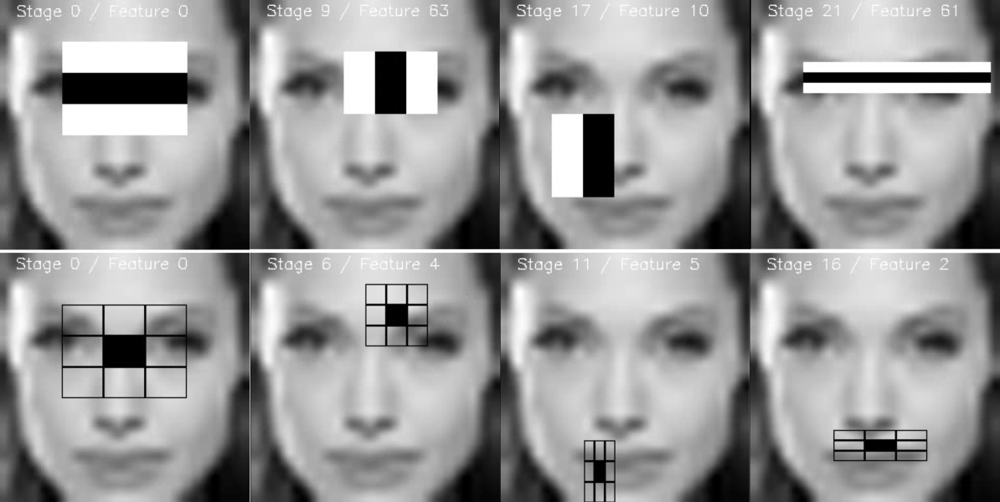

Cascade Classifier Training
Introduction
Working with a boosted cascade of weak classifiers includes two major stages: the training and the detection stage. The detection stage using either HAAR or LBP based models, is described in the object detection tutorial. This documentation gives an overview of the functionality needed to train your own boosted cascade of weak classifiers. The current guide will walk through all the different stages: collecting training data, preparation of the training data and executing the actual model training.
To support this tutorial, several official OpenCV applications will be used: opencv_createsamples, opencv_annotation, opencv_traincascade and opencv_visualisation.
Important notes
- If you come accross any tutorial mentioning the old opencv_haartraining tool (which is deprecated and still using the OpenCV1.x interface), then please ignore that tutorial and stick to the opencv_traincascade tool. This tool is a newer version, written in C++ in accordance to the OpenCV 2.x and OpenCV 3.x API. The opencv_traincascade supports both HAAR like wavelet features [87] and LBP (Local Binary Patterns) [48] features. LBP features yield integer precision in contrast to HAAR features, yielding floating point precision, so both training and detection with LBP are several times faster then with HAAR features. Regarding the LBP and HAAR detection quality, it mainly depends on the training data used and the training parameters selected. It’s possible to train a LBP-based classifier that will provide almost the same quality as HAAR-based one, within a percentage of the training time.
- The newer cascade classifier detection interface from OpenCV 2.x and OpenCV 3.x (cv::CascadeClassifier) supports working with both old and new model formats. opencv_traincascade can even save (export) a trained cascade in the older format if for some reason you are stuck using the old interface. At least training the model could then be done in the most stable interface.
- The opencv_traincascade application can use TBB for multi-threading. To use it in multicore mode OpenCV must be built with TBB support enabled.
Preparation of the training data
For training a boosted cascade of weak classifiers we need a set of positive samples (containing actual objects you want to detect) and a set of negative images (containing everything you do not want to detect). The set of negative samples must be prepared manually, whereas set of positive samples is created using the opencv_createsamples application.
Negative Samples
Negative samples are taken from arbitrary images, not containing objects you want to detect. These negative images, from which the samples are generated, should be listed in a special negative image file containing one image path per line (can be absolute or relative). Note that negative samples and sample images are also called background samples or background images, and are used interchangeably in this document.
Described images may be of different sizes. However, each image should be equal or larger than the desired training window size (which corresponds to the model dimensions, most of the times being the average size of your object), because these images are used to subsample a given negative image into several image samples having this training window size.
An example of such a negative description file:
Directory structure:
/img img1.jpg img2.jpg bg.txt
File bg.txt:
img/img1.jpg img/img2.jpg
Your set of negative window samples will be used to tell the machine learning step, boosting in this case, what not to look for, when trying to find your objects of interest.
Positive Samples
Positive samples are created by the opencv_createsamples application. They are used by the boosting process to define what the model should actually look for when trying to find your objects of interest. The application supports two ways of generating a positive sample dataset.
- You can generate a bunch of positives from a single positive object image.
- You can supply all the positives yourself and only use the tool to cut them out, resize them and put them in the opencv needed binary format.
While the first approach works decently for fixed objects, like very rigid logo’s, it tends to fail rather soon for less rigid objects. In that case we do suggest to use the second approach. Many tutorials on the web even state that 100 real object images, can lead to a better model than 1000 artificially generated positives, by using the opencv_createsamples application. If you however do decide to take the first approach, keep some things in mind:
- Please note that you need more than a single positive samples before you give it to the mentioned application, because it only applies perspective transformation.
- If you want a robust model, take samples that cover the wide range of varieties that can occur within your object class. For example in the case of faces you should consider different races and age groups, emotions and perhaps beard styles. This also applies when using the second approach.
The first approach takes a single object image with for example a company logo and creates a large set of positive samples from the given object image by randomly rotating the object, changing the image intensity as well as placing the image on arbitrary backgrounds. The amount and range of randomness can be controlled by command line arguments of the opencv_createsamples application.
Command line arguments:
-vec <vec_file_name>: Name of the output file containing the positive samples for training.-img <image_file_name>: Source object image (e.g., a company logo).-bg <background_file_name>: Background description file; contains a list of images which are used as a background for randomly distorted versions of the object.-num <number_of_samples>: Number of positive samples to generate.-bgcolor <background_color>: Background color (currently grayscale images are assumed); the background color denotes the transparent color. Since there might be compression artifacts, the amount of color tolerance can be specified by -bgthresh. All pixels withing bgcolor-bgthresh and bgcolor+bgthresh range are interpreted as transparent.-bgthresh <background_color_threshold>-inv: If specified, colors will be inverted.-randinv: If specified, colors will be inverted randomly.-maxidev <max_intensity_deviation>: Maximal intensity deviation of pixels in foreground samples.-maxxangle <max_x_rotation_angle>: Maximal rotation angle towards x-axis, must be given in radians.-maxyangle <max_y_rotation_angle>: Maximal rotation angle towards y-axis, must be given in radians.-maxzangle <max_z_rotation_angle>: Maximal rotation angle towards z-axis, must be given in radians.-show: Useful debugging option. If specified, each sample will be shown. Pressing Esc will continue the samples creation process without showing each sample.-w <sample_width>: Width (in pixels) of the output samples.-h <sample_height>: Height (in pixels) of the output samples.
When running opencv_createsamples in this way, the following procedure is used to create a sample object instance: The given source image is rotated randomly around all three axes. The chosen angle is limited by -maxxangle, -maxyangle and -maxzangle. Then pixels having the intensity from the [bg_color-bg_color_threshold; bg_color+bg_color_threshold] range are interpreted as transparent. White noise is added to the intensities of the foreground. If the -inv key is specified then foreground pixel intensities are inverted. If -randinv key is specified then algorithm randomly selects whether inversion should be applied to this sample. Finally, the obtained image is placed onto an arbitrary background from the background description file, resized to the desired size specified by -w and -h and stored to the vec-file, specified by the -vec command line option.
Positive samples also may be obtained from a collection of previously marked up images, which is the desired way when building robust object models. This collection is described by a text file similar to the background description file. Each line of this file corresponds to an image. The first element of the line is the filename, followed by the number of object annotations, followed by numbers describing the coordinates of the objects bounding rectangles (x, y, width, height).
An example of description file:
Directory structure:
/img img1.jpg img2.jpg info.dat
File info.dat:
img/img1.jpg 1 140 100 45 45 img/img2.jpg 2 100 200 50 50 50 30 25 25
Image img1.jpg contains single object instance with the following coordinates of bounding rectangle: (140, 100, 45, 45). Image img2.jpg contains two object instances.
In order to create positive samples from such collection, -info argument should be specified instead of -img :
-info <collection_file_name>: Description file of marked up images collection.
Note that in this case, parameters like -bg, -bgcolor, -bgthreshold, -inv, -randinv, -maxxangle, -maxyangle, -maxzangle are simply ignored and not used anymore. The scheme of samples creation in this case is as follows. The object instances are taken from the given images, by cutting out the supplied bounding boxes from the original images. Then they are resized to target samples size (defined by -w and -h) and stored in output vec-file, defined by the -vec parameter. No distortion is applied, so the only affecting arguments are -w, -h, -show and -num.
The manual process of creating the -info file can also been done by using the opencv_annotation tool. This is an open source tool for visually selecting the regions of interest of your object instances in any given images. The following subsection will discuss in more detail on how to use this application.
Extra remarks
- opencv_createsamples utility may be used for examining samples stored in any given positive samples file. In order to do this only
-vec,-wand-hparameters should be specified. - Example of vec-file is available here
opencv/data/vec_files/trainingfaces_24-24.vec. It can be used to train a face detector with the following window size:-w 24 -h 24.
Using OpenCV’s integrated annotation tool
Since OpenCV 3.x the community has been supplying and maintaining a open source annotation tool, used for generating the -info file. The tool can be accessed by the command opencv_annotation if the OpenCV applications where build.
Using the tool is quite straightforward. The tool accepts several required and some optional parameters:
--annotations(required) : path to annotations txt file, where you want to store your annotations, which is then passed to the-infoparameter [example - /data/annotations.txt]--images(required) : path to folder containing the images with your objects [example - /data/testimages/]--maxWindowHeight(optional) : if the input image is larger in height then the given resolution here, resize the image for easier annotation, using--resizeFactor.--resizeFactor(optional) : factor used to resize the input image when using the--maxWindowHeightparameter.
Note that the optional parameters can only be used together. An example of a command that could be used can be seen below
opencv_annotation --annotations=/path/to/annotations/file.txt --images=/path/to/image/folder/
This command will fire up a window containing the first image and your mouse cursor which will be used for annotation. A video on how to use the annotation tool can be found here. Basically there are several keystrokes that trigger an action. The left mouse button is used to select the first corner of your object, then keeps drawing until you are fine, and stops when a second left mouse button click is registered. After each selection you have the following choices:
- Pressing
c: confirm the annotation, turning the annotation green and confirming it is stored - Pressing
d: delete the last annotation from the list of annotations (easy for removing wrong annotations) - Pressing
n: continue to the next image - Pressing
ESC: this will exit the annotation software
Finally you will end up with a usable annotation file that can be passed to the -info argument of opencv_createsamples.
Cascade Training
The next step is the actual training of the boosted cascade of weak classifiers, based on the positive and negative dataset that was prepared beforehand.
Command line arguments of opencv_traincascade application grouped by purposes:
- Common arguments:
-data <cascade_dir_name>: Where the trained classifier should be stored. This folder should be created manually beforehand.-vec <vec_file_name>: vec-file with positive samples (created by opencv_createsamples utility).-bg <background_file_name>: Background description file. This is the file containing the negative sample images.-numPos <number_of_positive_samples>: Number of positive samples used in training for every classifier stage.-numNeg <number_of_negative_samples>: Number of negative samples used in training for every classifier stage.-numStages <number_of_stages>: Number of cascade stages to be trained.-precalcValBufSize <precalculated_vals_buffer_size_in_Mb>: Size of buffer for precalculated feature values (in Mb). The more memory you assign the faster the training process, however keep in mind that-precalcValBufSizeand-precalcIdxBufSizecombined should not exceed you available system memory.-precalcIdxBufSize <precalculated_idxs_buffer_size_in_Mb>: Size of buffer for precalculated feature indices (in Mb). The more memory you assign the faster the training process, however keep in mind that-precalcValBufSizeand-precalcIdxBufSizecombined should not exceed you available system memory.-baseFormatSave: This argument is actual in case of Haar-like features. If it is specified, the cascade will be saved in the old format. This is only available for backwards compatibility reasons and to allow users stuck to the old deprecated interface, to at least train models using the newer interface.-numThreads <max_number_of_threads>: Maximum number of threads to use during training. Notice that the actual number of used threads may be lower, depending on your machine and compilation options. By default, the maximum available threads are selected if you built OpenCV with TBB support, which is needed for this optimization.-acceptanceRatioBreakValue <break_value>: This argument is used to determine how precise your model should keep learning and when to stop. A good guideline is to train not further than 10e-5, to ensure the model does not overtrain on your training data. By default this value is set to -1 to disable this feature.
- Cascade parameters:
-stageType <BOOST(default)>: Type of stages. Only boosted classifiers are supported as a stage type at the moment.-featureType<{HAAR(default), LBP}>: Type of features: HAAR - Haar-like features, LBP - local binary patterns.-w <sampleWidth>: Width of training samples (in pixels). Must have exactly the same value as used during training samples creation (opencv_createsamples utility).-h <sampleHeight>: Height of training samples (in pixels). Must have exactly the same value as used during training samples creation (opencv_createsamples utility).
- Boosted classifer parameters:
-bt <{DAB, RAB, LB, GAB(default)}>: Type of boosted classifiers: DAB - Discrete AdaBoost, RAB - Real AdaBoost, LB - LogitBoost, GAB - Gentle AdaBoost.-minHitRate <min_hit_rate>: Minimal desired hit rate for each stage of the classifier. Overall hit rate may be estimated as (min_hit_rate ^ number_of_stages), [88] §4.1.-maxFalseAlarmRate <max_false_alarm_rate>: Maximal desired false alarm rate for each stage of the classifier. Overall false alarm rate may be estimated as (max_false_alarm_rate ^ number_of_stages), [88] §4.1.-weightTrimRate <weight_trim_rate>: Specifies whether trimming should be used and its weight. A decent choice is 0.95.-maxDepth <max_depth_of_weak_tree>: Maximal depth of a weak tree. A decent choice is 1, that is case of stumps.-maxWeakCount <max_weak_tree_count>: Maximal count of weak trees for every cascade stage. The boosted classifier (stage) will have so many weak trees (<=maxWeakCount), as needed to achieve the given-maxFalseAlarmRate.
- Haar-like feature parameters:
-mode <BASIC (default) | CORE | ALL>: Selects the type of Haar features set used in training. BASIC use only upright features, while ALL uses the full set of upright and 45 degree rotated feature set. See [49] for more details.
- Local Binary Patterns parameters: Local Binary Patterns don’t have parameters.
After the opencv_traincascade application has finished its work, the trained cascade will be saved in cascade.xml file in the -data folder. Other files in this folder are created for the case of interrupted training, so you may delete them after completion of training.
Training is finished and you can test your cascade classifier!
Visualising Cascade Classifiers
From time to time it can be usefull to visualise the trained cascade, to see which features it selected and how complex its stages are. For this OpenCV supplies a opencv_visualisation application. This application has the following commands:
--image(required) : path to a reference image for your object model. This should be an annotation with dimensions [-w,-h] as passed to both opencv_createsamples and opencv_traincascade application.--model(required) : path to the trained model, which should be in the folder supplied to the-dataparameter of the opencv_traincascade application.--data(optional) : if a data folder is supplied, which has to be manually created beforehand, stage output and a video of the features will be stored.
An example command can be seen below
opencv_visualisation --image=/data/object.png --model=/data/model.xml --data=/data/result/
Some limitations of the current visualisation tool
- Only handles cascade classifier models, trained with the opencv_traincascade tool, containing stumps as decision trees [default settings].
- The image provided needs to be a sample window with the original model dimensions, passed to the
--imageparameter.
Example of the HAAR/LBP face model ran on a given window of Angelina Jolie, which had the same preprocessing as cascade classifier files>24x24 pixel image, grayscale conversion and histogram equalisation:
A video is made with for each stage each feature visualised:
Each stage is stored as an image for future validation of the features:
This work was created for OpenCV 3 Blueprints by StevenPuttemans but Packt Publishing agreed integration into OpenCV.